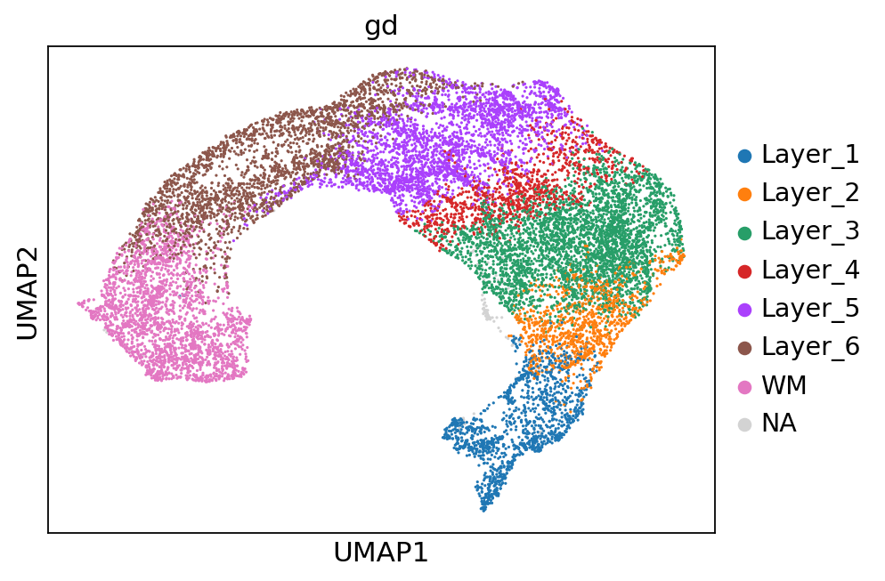

Spatial domain identification on 10x Visium DLFPC data¶
[1]:
import os
import torch
import scanpy as sc
import seaborn as sns
import matplotlib.pyplot as plt
import numpy as np
import pandas as pd
from step import stModel
from step.utils.misc import set_seed
from sklearn.metrics import adjusted_rand_score
import anndata as ad
sc.settings.figdir = './results/DLPFC'
sc.set_figure_params(dpi_save=300, figsize=(6, 4.5))
/projects/82505004-e7a0-445f-ab3c-80d03c91438f/.cache/pypoetry/virtualenvs/step-Ajq_Bw_i-py3.10/lib/python3.10/site-packages/tqdm/auto.py:21: TqdmWarning: IProgress not found. Please update jupyter and ipywidgets. See https://ipywidgets.readthedocs.io/en/stable/user_install.html
from .autonotebook import tqdm as notebook_tqdm
[2]:
os.chdir(os.path.expanduser('~/case-studies'))
151673 single section without using variational¶
[3]:
set_seed(42)
[4]:
stepc = stModel(
file_path='./data/151673/151673_annotated.h5ad',
n_top_genes=2000,
layer_key=None,
module_dim=30,
hidden_dim=64,
n_modules=10,
decoder_type='zinb',
variational=False,
n_glayers=6
)
Trying seurat_v3 for hvgs
not log_transformed
Adding count data to layer 'counts'
Dataset Done
================Dataset Info================
Batch key: None
Class key: None
Number of Batches: 1
Number of Classes: None
Gene Expr: (3639, 2000)
============================================
Not using VAE
[5]:
stepc.run(n_iterations=3000)
Training with e2e pattern
Training graph with single batch
100%|██████████| 3000/3000 [01:19<00:00, 37.96step/s, recon_loss=1622.729, contrast_loss=0.130, graph_ids=None]
[6]:
adata = stepc.adata
adata
[6]:
AnnData object with n_obs × n_vars = 3639 × 2000
obs: 'in_tissue', 'array_row', 'array_col', 'gd', 'n_genes'
var: 'gene_ids', 'feature_types', 'genome', 'MT_gene', 'highly_variable', 'highly_variable_rank', 'means', 'variances', 'variances_norm'
uns: 'spatial', 'hvg', 'log1p'
obsm: 'spatial', 'MT', 'X_smoothed'
layers: 'counts'
[7]:
stepc.cluster(adata, use_rep='X_smoothed', n_clusters=7, key_added='cluster_',)
[8]:
sc.pp.neighbors(adata, use_rep="X_smoothed", n_neighbors=100)
sc.tl.umap(adata)
[9]:
sc.pl.umap(adata, color=['cluster_', 'gd'])

[10]:
sc.pl.spatial(adata, color=['cluster_', 'gd'])
[11]:
adata = adata[adata.obs['gd'].cat.codes != -1]
adjusted_rand_score(adata.obs['cluster_'], adata.obs['gd'].cat.codes)
[11]:
0.6415591888519586
151673 single section with using variational¶
[3]:
set_seed(123456)
stepc = stModel(
file_path='./data/151673/151673_annotated.h5ad',
n_top_genes=3000,
layer_key=None,
module_dim=30,
hidden_dim=64,
n_modules=16,
decoder_type='zinb',
n_glayers=3,
)
Trying seurat_v3 for hvgs
not log_transformed
Adding count data to layer 'counts'
Dataset Done
================Dataset Info================
Batch key: None
Class key: None
Number of Batches: 1
Number of Classes: None
Gene Expr: (3639, 3000)
============================================
[4]:
stepc.run(n_samples=2400,
n_iterations=3400,)
Training with e2e pattern
Training graph with single batch
100%|██████████| 3400/3400 [03:01<00:00, 18.71step/s, recon_loss=2270.652, kl_loss=0.142, contrast_loss=0.006, graph_ids=None]
[5]:
adata = stepc.adata
stepc.cluster(adata, use_rep='X_smoothed', n_clusters=7, key_added='cluster_')
adata = adata[adata.obs['gd'].cat.codes != -1]
[6]:
sc.pp.neighbors(adata, use_rep='X_smoothed', n_neighbors=100)
sc.tl.umap(adata)
sc.pl.umap(adata, color=['cluster_', 'gd'])

[7]:
sc.pl.spatial(adata, color=['cluster_', 'gd'])

[8]:
ari = adjusted_rand_score(adata.obs['cluster_'], adata.obs['gd'].cat.codes)
ari
[8]:
0.6854871224605329
[9]:
stepc.save("./results/DLPFC/151673-config/")
Saving model...
Saving model config...
Saving dataset config...
151673 to 151676 together¶
[3]:
paths = [f'./data/{i}/{i}_annotated.h5ad' for i in range(151673, 151677)]
import os
adatas = [sc.read_h5ad(path) for path in paths]
adatas = {f'{151673 + i}': adata for i, adata in enumerate(adatas)}
adata = ad.concat(adatas, uns_merge='unique', label='batch')
[4]:
adata.uns['spatial'].keys()
[4]:
dict_keys(['151673', '151674', '151675', '151676'])
[5]:
adata.obs['batch'].value_counts()
[5]:
batch
151674 3673
151673 3639
151675 3592
151676 3460
Name: count, dtype: int64
[6]:
stepc = stModel(
adata=adata,
n_top_genes=2000,
batch_key='batch',
n_modules=10,
decoder_type='zinb',
variational=True,
dec_norm='batch',
n_glayers=6,
dispersion="gene"
)
Trying seurat_v3 for hvgs
not log_transformed
Adding count data to layer 'counts'
Dataset Done
================Dataset Info================
Batch key: batch
Class key: None
Number of Batches: 4
Number of Classes: None
Gene Expr: (14364, 2000)
Batch Label: (14364,)
============================================
Note: The results in paper were obtained by setting beta=1e-3
[7]:
stepc.run(graph_batch_size=2,
n_iterations=2000,
beta=1e-5,)
Training with e2e pattern
Training graph with multiple batches
Constructing graph for batch 151673
Constructing graph for batch 151674
Constructing graph for batch 151675
Constructing graph for batch 151676
100%|██████████| 2000/2000 [04:05<00:00, 8.14step/s, recon_loss=1045.916, kl_loss=0.002, contrast_loss=0.579, graph_ids=[0, 1]]
[8]:
stepc.cluster(n_clusters=7, key_added='cluster_',)
adata = stepc.adata
aris = []
for i in range(151673, 151677):
_adata = adata[adata.obs['batch'] == str(i)]
ari = adjusted_rand_score(_adata.obs['cluster_'], _adata.obs['gd'].cat.codes)
aris.append(ari)
print(aris)
adata = stepc.adata
[0.6859044700752418, 0.6737134878196837, 0.6574160363368401, 0.645033638093529]
[9]:
sc.pp.neighbors(adata, use_rep="X_smoothed", n_neighbors=60)
sc.tl.umap(adata)
[10]:
for col in ['gd', 'cluster_', 'batch']:
sc.pl.umap(adata, color=col)



Spatial plots and ARIs without NA spots¶
[9]:
for i in range(151673, 151677):
_adata = adata[adata.obs['batch'] == str(i)]
ari_kmeans = adjusted_rand_score(_adata.obs['cluster_'], _adata.obs['gd'].cat.codes)
sc.pl.spatial(_adata, color='cluster_', library_id=str(i),
img_key=None,
title=f'{i}_ari_{ari_kmeans: .2f}',
)

[11]:
stepc.save("./reuslts/dlfpc-p3-together")
Saving model...
Saving model config...
Saving dataset config...
[10]:
from sklearn.metrics import adjusted_rand_score
adata = adata[adata.obs['gd'].cat.codes != -1]
for i in range(151673, 151677):
_adata = adata[adata.obs['batch'] == str(i)]
ari_kmeans = adjusted_rand_score(_adata.obs['cluster_'], _adata.obs['gd'].cat.codes)
print(f"{i}: {ari_kmeans}")
151673: 0.693643745029269
151674: 0.6823133597364682
151675: 0.6644988100827957
151676: 0.6493974579858672
[ ]: